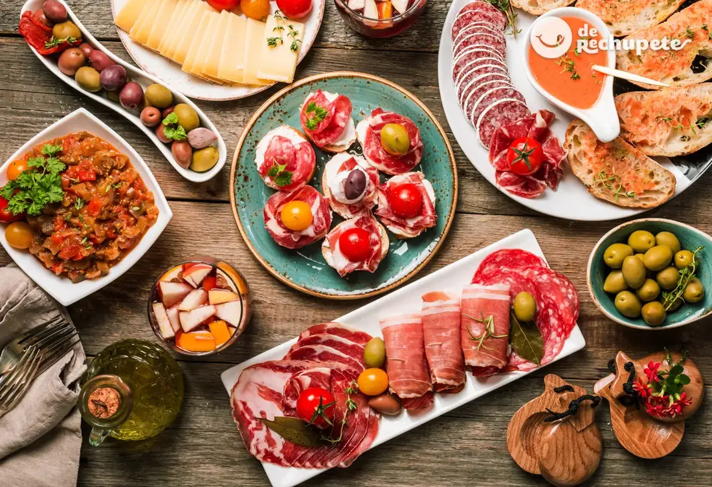
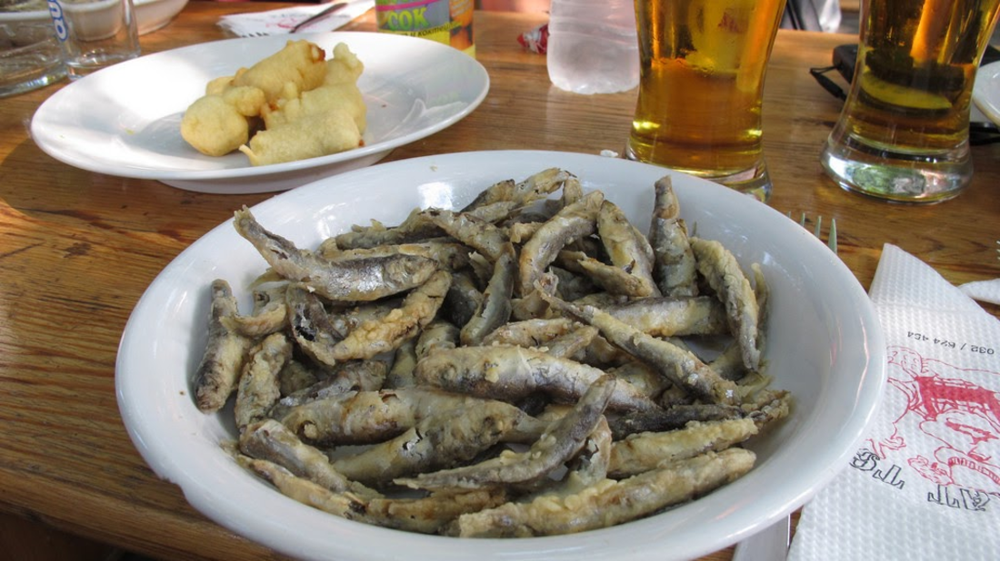
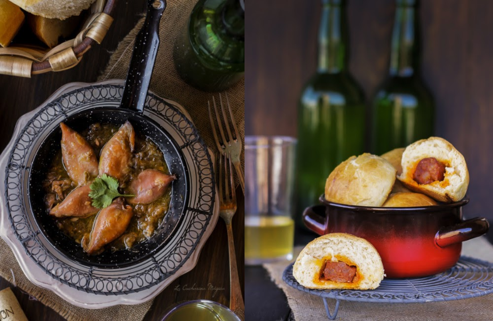
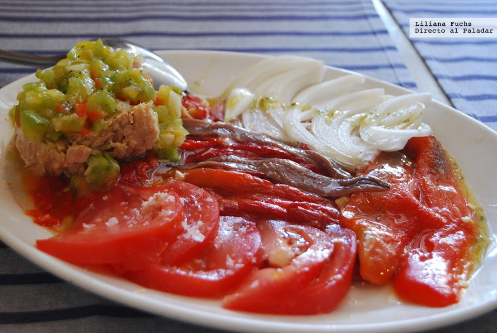
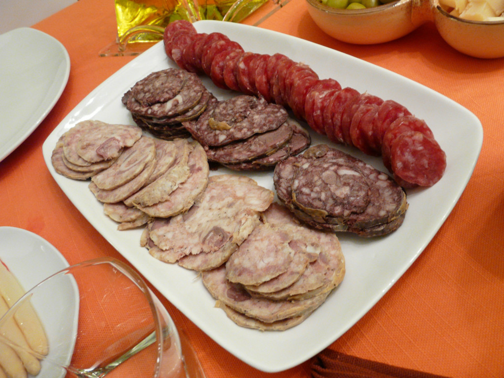
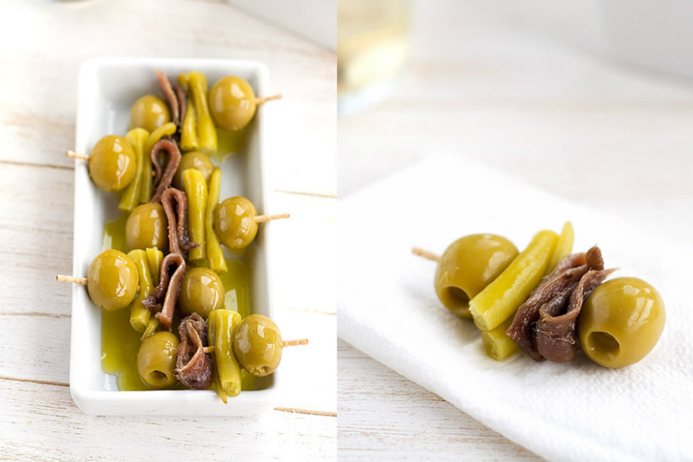
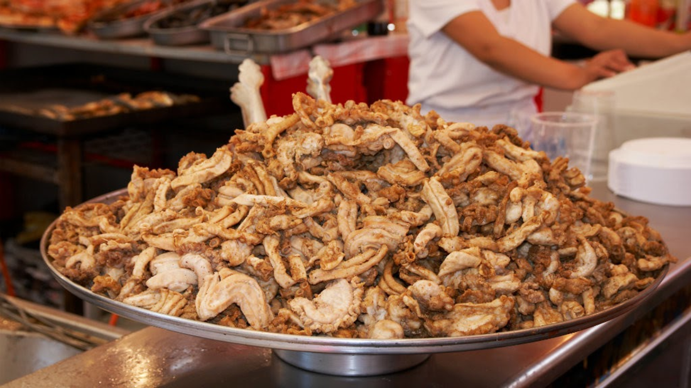

La gastronomía española es una parte fundamental de nuestra cultura, con una larga y apasionante historia. Con tantas regiones, productos y tradiciones diferentes es inevitable una gran variedad y riqueza culinaria, pero si hay algo que la define es, quizá, el noble arte del aperitivo y del tapeo. Aunque no sea costumbre exclusivamente española, sí que tiene unos rasgos muy particulares que se han convertido en seña de identidad conocida en todo el mundo, y trazar un mapa de los mejores aperitivos de España es embarcarse en un viaje irresistible.
Quizá es Andalucía la Comunidad Autónoma que tradicionalmente más se asocia con el aperitivo y el tapeo, y es que muchos de los platos más típicos con los que se acompañan cañas, vinos y vermúts provienen de alguna manera de esta deliciosa tierra. Es complicado hacer solo una selección, más aún considerando el enorme territorio lleno de ciudades y pueblos con sus especialidades, pero podemos resaltar la importancia del aceite de oliva y la presencia tanto de productos del mar como recetas de carne, y una gran presencia de hortalizas de la tierra.
Hoy están por todo el país pero el gazpacho, el salmorejo y también el ajoblanco, hay que situarlos aquí, al igual que el imprescindible pescaíto frito, aceitunas y conservas como los boquerones en vinagre. Con buen aceite el bar andaluz domina el arte de la freiduría también con productos de la huerta, pero mencionemos por ejemplo las papas aliñás, deliciosas cuando son de verdadera calidad, o el pisto en alguna de sus variantes. La tortillita de camarones es otra especialidad inolvidable, así como los adobos de pescado y las ortiguillas.
Reconozco que tengo debilidad por Asturias, una tierra maravillosa en todos los sentidos. Por supuesto, como en todo el norte de la cornisa cantábrica, aquí se come muy bien, también a la hora del aperitivo. Las recetas y los platos más comunes traspasan fronteras con sus vecinos cercanos del País Vasco y Cantabria, pero hay especialidades únicas que merece destacar. Al margen, por supuesto, de lo que ofrezca ese día el puerto más cercano en cuanto a tapeo y raciones de pescado y marisco.
El pastel de pescado es común en todo el norte aunque en Asturias también hay más gusto por el de merluza y no solo cabracho. El bonito fresco o en conserva no falta en las opciones de pinchos y tostas, también en raciones de aperitivo por ejemplo con tomate. Merece la pena probar los chipirones afogaos cuando se encuentran -receta de la Cucharina Mágica , además del popular chorizo a la sidra. Los bollos preñaos acompañan bien a una sidra o una caña, al igual que el boroñu preñao, con harina de maíz, algo más contundente y mejor para compartir. Tampoco se pueden olvidar los magníficos quesos, por sí solos o como parte de picoteos varios.
La cocina cántabra mantiene la línea de sus regiones vecinas, con excelentes materias primas del mar y de la huerta, buenas conservas de pescado y sin olvidar el magnífico vacuno y la caza en los platos más contundentes. Pero a la hora del aperitivo lo mejor es acercarse a las zonas de costa y entregarse a compartir raciones, cazuelas y platos de lo mejor que haya ofrecido el puerto ese día.
Aunque se repiten sabores del País Vasco o de Asturias, por ejemplo el pastel de pescado y pinchos en formas muy variadas, en Cantabria no pueden faltar las rabas de calamar fritas, todo un símbolo especialmente en Santander. Y, por supuesto, sus magníficas anchoas, que pueden formar parte de ricas ensaladas con pimientos asados, buen tomate en temporada y el también delicioso bonito. Los escabeches suelen ser de gran calidad y los salpicones sientan de maravilla en verano.
En las provincias catalanas se continúa la tradición más puramente mediterránea con la constante presencia del mar y sus productos frescos, pero también hay una notable cocina de interior que hereda tradiciones más rurales. En las grandes capitales están surgiendo muchos locales modernos que lanzan propuestas de tapas y menús informales con recetas más o menos creativas sobre tapas comunes a todo el país, pero hay que destacar las materias primas propias.
En Cataluña no se puede dejar de mencionar el pa amb tomàquet que casi diría que entra bien a cualquier hora, con o sin jamón, y las estupendas cocas que tan bien acompañan a una caña a mediodía. Se pueden combinar los fantásticos embutidos del cerdo -fuet, salchichón de Vic, butifarra con opciones más ligeras a base de verduras frescas -escalivada, samfaina, xató-. Salsas como el romesco o el allioli acompañan de maravilla casi cualquier cosa.
En el País Vasco el aperitivo tiene su nombre propio con el txikiteo y sus ya famosísimos pintxos, que llenan las barras de multitud de bares de todo tipo. Aunque originalmente consistían en un bocado pequeño atravesado por un pincho, normalmente sobre pan, para acompañar la bebida típica de antes de comer, hoy la cosa se ha complicado con propuestas variadísimas, creativas y en ocasiones demasiado complejas hasta para comer con las manos. La fama que han ganado en los últimos años y la fuerte competencia hace imposible seleccionar algunos y es mejor adentrarse en los locales a probar lo que se ofrece ese día.
Claro que no se puede dejar de mencionar la mítica gilda, tan sencilla como exquisita, a base de aceituna, piparra y anchoa -aquí la receta de nuestra amiga Pam de Unodedos-, o los grillos de patata cocida, lechuga, anchoa, guindilla y aceituna. Además se pueden picar raciones pequeñas de bacalao al pil-pil, bonito en escabeche, pimientos, champiñones a la plancha, embutidos varios y una ración del pastel de cabracho que popularizó Arzak hace ya unos años.
Puede ser difícil escoger unos pocos aperitivos en Madrid porque la capital ha absorbido muchas tradiciones culinarias de otros lugares de España, hasta el punto de que es muy típico algo como el bocadillo de calamares cuando no tiene mar. Pero hy que reconocer que en Madrid se puede disfrutar de las mejores tapas de pescado y marisco del país, destacando los buñuelos de bacalao o los soldaditos de Pavía, ya asociados al tapeo madrileño a pesar de su origen andaluz.
Al margen de las tapas universales que no faltan en ningún bar de cañas o para acompañar el vermut, los aperitivos más típicos se asocian con lo más castizo de la cultura madrileña. Las frituras de casquería como las gallinejas y los entresijos, los caracoles a la madrileña, las setas al ajillo o las manitas de cerdo se dejan ver en los locales con más solera junto con tapas más comunes como las patatas bravas, la tortilla o las croquetas de todo tipo.
Copyright © 2022 The amazing food - Todos los derechos reservados.